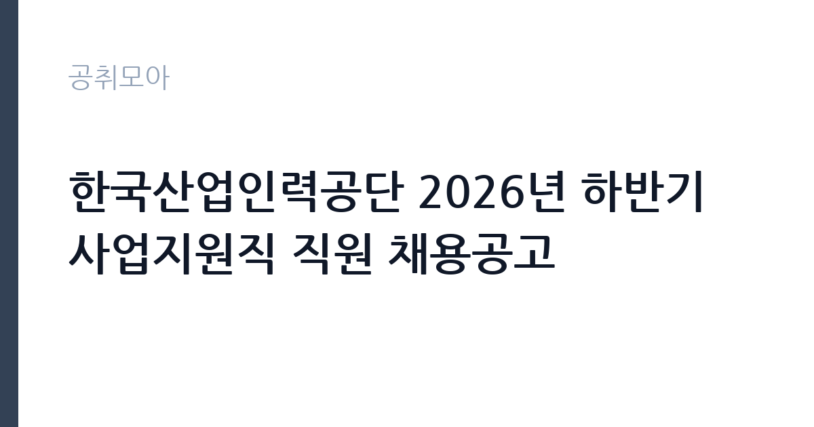

[공공기관] 한국산업인력공단 2026년 하반기 사업지원직 직원 채용공고
한국산업인력공단 · 부산 · 마감 2026-11-10 (D-15) · 출처 잡알리오

한눈에 보는 모집 조건
| 기관 | 한국산업인력공단 |
|---|---|
| 공고명 | 한국산업인력공단 2026년 하반기 사업지원직 직원 채용공고 |
| 고용형태 | 정규직 |
| 근무지 | 부산 |
| 게시일 | 2026-10-26 |
| 마감일 | 2026-11-10 (D-15) |
지원자격, 이렇게 읽으세요
- 공공기관 채용공시
- 세부 조건은 원문 공고문 확인
정규직 채용은 기간의 정함이 없는 근로계약을 전제로 합니다. 수습 기간을 두고 평가한 뒤 정규직으로 확정하는 절차가 일반적이며 기관의 인사 규정과 임금 체계를 적용받습니다. 이번 공고는 한국산업인력공단가 직접 진행하는 자체 전형입니다. 응시 자격은 공고문의 모집분야별 요건을 기준으로 판단해야 합니다. 같은 공고 안에서도 직무에 따라 학력·전공·경력 요건이 다르게 적용되므로, 본인이 지원할 분야의 요건을 정확히 확인하십시오. 경력은 증명서로 입증해야 하고, 자격증 사본과 졸업증명서가 기본 제출서류로 붙습니다. 우대 사항은 가점으로 반영되므로 해당 여부를 확인해 증빙을 첨부해야 합니다. 결격사유 조회와 신원 확인 절차가 공통으로 적용됩니다. 응시 자격 판단이 애매하면 접수 전에 채용 담당 부서로 문의하는 편이 안전합니다. 자격 취득 예정자는 채용 공고의 예정자 허용 조항을 먼저 확인해야 합니다. 조항이 없으면 지원 자체가 반려될 수 있습니다. 응시 자격 판단이 애매하다면 접수 전에 채용 담당 부서로 문의하는 편이 안전합니다. 서류 제출 후에는 소명 기회가 없습니다. 이 공고 원문에 적힌 응시 조건 문구는 '학력, 성별, 연령 제한 없음.' / '시설물관리원 필수자격 : 모집단위별로 자격요건 상이' / '시설물관리원(일반)(글로벌숙련기술진흥원,충북지사,충남지사) : 전기·가스·에너지·기계 관련 분야 기능사 이상 국가기술자격증 소지자(전기, 가스, 일반기계, 건축설비, 건설기계설비, 공조냉동기계, 설비보전, 용접, 에너지관리 중 1개 이상 자격증 소지)'입니다. 문구를 그대로 읽고 본인 해당 여부를 하나씩 표시해 두면 서류 단계에서 탈락하는 일을 줄일 수 있습니다.
이 공고의 포인트
이 건은 한국산업인력공단가 같은 시기에 낸 2개 모집분야 가운데 일반 사무·운영 직무입니다. 다른 직무 공고와 요건이 다르므로 지원 전에 모집분야 표를 대조해야 합니다. 이 공고의 첫 번째 포인트는 고용 형태입니다. 수습 기간 평가를 통과하면 기간의 정함이 없는 신분이 되어 고용이 안정됩니다. 두 번째는 업무 범위가 명확하다는 점입니다. 일반 사무·운영 직무로 채용되므로 배치 이후 담당 업무가 크게 흔들리지 않습니다. 세 번째는 근무지입니다. 부산 지역 근무로 수도권 공고에 비해 지원자 분포가 넓지 않아 상대적으로 경쟁이 분산되는 경우가 있습니다. 선발 절차가 단순한 편이어서 서류와 면접 준비에 집중할 수 있습니다. 같은 직무로 함께 올라온 공고 가운데 접수 마감이 가장 늦은 편이라 준비 시간을 상대적으로 확보할 수 있습니다. 선발 인원은 공고문에 명시되어 있으니 모집분야 항목을 함께 확인하십시오.
전형은 어떻게 진행되나
전형은 서류심사와 면접심사를 기본으로 하고 직무에 따라 필기나 실기, 체력검정이 추가됩니다. 서류 단계에서는 응시자격 충족 여부와 제출서류 형식을 확인하며 이 단계에서 탈락하는 지원자가 적지 않습니다. 면접은 직무 이해도와 경험을 확인하는 방식으로 진행되고 발표는 개별 통보나 홈페이지 게시로 이뤄집니다. 최종합격 이후에는 결격사유 조회와 채용 신체검사가 이어지며 이 절차에서 문제가 확인되면 합격이 취소될 수 있습니다. 구체적인 전형 단계와 배점은 공고문에 표로 정리되어 있으니 원문을 기준으로 준비하십시오. 온라인 접수는 마감 시각이 분 단위로 정해지므로 시스템 시간을 기준으로 판단해야 합니다.
원문에서 확인한 전형 방식
ㅇ 공통 지원자격 - 학력, 성별, 연령 제한 없음. 단, 공단 인사규정 제48조(정년)에 따라 정년* 초과자는 지원 불가 * 시설물관리원 : 만 60세 - 최종합격자 발표 후 임용 시 즉시 근무가능자 (근무 불가능시 합격 취소) - 우리 공단 인사규정 제24조의 결격사유에 해당하지 않는 자 ㅇ 시설물관리원(전기)(부산지역본부) 지원자격 - 2교대(24시간/1일 격일제) 근무 가능하며 감시·단속적 근로에 동의하는 자 ㅇ 시설물관리원 필수자격 : 모집단위별로 자격요건 상이 - 시설물관리원(일반)(글로벌숙련기술진흥원,충북지사,충남지사) : 전기·가스·에너지·기계 관련 분야 기능사 이상 국가기술자격증 소지자(전기, 가스, 일반기계, 건축설비, 건설기계설비, 공조냉동기계, 설비보전, 용접, 에너지관리 중 1개 이상 자격증 소지) - 시설물관리원(전기)(부산지역본부) : 전기기능사 이상 국가기술자격증 소지자(전기산업기사, 전기기사, 전기공사산업기사, 전기공사기사 포함) - 시설물관리원(일반)(부산남부지사,대전지역본부) : 전기기능사 이상 국가기술자격증 소지자(전기산업기사, 전기기사, 전기공사산업기사, 전기공사기사 포함) ※ 자세한 사항은
이런 분께 추천해요
- 공고 모집분야의 요건을 충족하는 분
- 사무와 현장 업무를 함께 수행할 수 있는 분
- 부서 배치와 업무 조정을 수용할 수 있는 분
지원 전 체크리스트
- 응시자격 요건과 경력 기준을 충족하는가 — 경력은 증명서로 입증해야 합니다
- 수습 기간과 정규직 전환 조건을 확인했는가
- 제출서류 목록을 모두 준비했는가 — 누락 시 서류 단계에서 탈락합니다
- 접수 마감 2026-11-10 이전에 접수 방식을 확인해 제출했는가
모집 일정과 제출 타이밍
접수 마감은 2026-11-10이고 공고는 2026-10-26에 게시되었습니다. 준비 기간 15일 안에 서류 작성, 증빙 발급, 접수를 모두 마쳐야 하므로 주말을 포함해 일정을 미리 나누는 것이 좋습니다. 특히 경력 기술서나 직무수행계획서를 요구하는 공고는 작성에 시간이 걸리므로 첫날 초안을 잡으십시오. 서류 합격자 발표와 면접 사이 간격이 짧은 경우가 많아 면접 예상 질문은 서류 제출 전에 정리해 두는 편이 유리합니다. 마감 직전에는 접속이 몰리므로 여유를 두고 제출하십시오. 공휴일이 끼어 있으면 증명서 발급이 늦어질 수 있으니 발급 일정을 앞당기십시오.
직무 이해하기: 공공기관
한국산업인력공단은 국가기술자격 시험과 직업능력개발, 외국인 고용 허가제를 운영하는 준정부기관입니다. 본부와 지역본부·지청이 전국에 배치되어 있고, 사업지원직은 접수·심사·자격 관리 같은 실무를 맡습니다. 시험 일정에 따라 업무량이 몰립니다. 이 공고는 제목에 직무가 구체적으로 드러나지 않아 모집분야 항목으로 업무를 확인해야 합니다. 일반적으로는 부서에 배치되어 사무 업무와 현장 지원 업무를 함께 맡습니다. 사무 쪽은 문서 작성과 자료 정리, 예산 집행 보조, 민원 응대가 중심이고, 현장 쪽은 시설 확인과 운영 지원, 행사 준비가 중심입니다. 배치 부서에 따라 업무 비중이 크게 달라지므로 면접에서 희망 분야를 밝히는 것이 좋습니다. 구체적인 직무 내용은 공고문의 모집분야 또는 직무기술서에서 확인하십시오. 이 직무는 담당 구역이 정해져 있어 근무지에 따라 실제 업무 환경이 달라집니다. 업무 매뉴얼과 지침이 문서로 정리되어 있어 절차를 익히면 반복 업무는 빠르게 손에 붙습니다.
자기소개서 작성 팁
지원서는 모집분야를 명확히 밝히고 그 분야에 맞는 경험을 앞세우는 것이 중요합니다. 사무직을 지원한다면 문서 작성과 데이터 정리 경험을, 운영직을 지원한다면 현장 대응 경험을 중심에 두십시오. 기관의 사업을 조사해 어떤 부서에서 일하고 싶은지 구체적으로 쓰면 준비도가 드러납니다. 여러 분야에 두루 걸친 추상적인 서술은 피하십시오. 문항별 글자 수 제한을 먼저 확인하고, 각 문항의 첫 문장에 결론을 배치하는 방식이 읽기 쉽습니다. 지원 동기는 기관의 어떤 사업에 기여하겠다는 한 문장으로 시작하고, 이어서 본인의 경험을 근거로 붙이십시오. 감점을 피하려면 다른 기관에 보낼 수 있는 범용 문장을 그대로 쓰지 않는 것이 중요합니다. 기관 이름과 사업명이 문장 안에 자연스럽게 들어가야 준비도가 드러납니다.
면접 준비 포인트
면접에서는 지원 분야에 대한 이해와 업무 처리 방식을 확인합니다. 여러 직무 중 왜 해당 분야를 선택했는지, 맡은 업무를 어떤 순서로 처리할지 묻습니다. 부서 이동이 가능한지에 대한 질문도 자주 나오므로 솔직하게 답하십시오. 사무 경험이 있다면 문서 작성과 엑셀 활용 사례를, 현장 경험이 있다면 안전 관리와 협업 사례를 준비하십시오. 직무 특성상 체력이나 근무 시간에 대한 질문이 나올 수 있으므로 솔직하게 답하고 관리 계획을 함께 제시하십시오. 직무 특성상 체력이나 근무 시간에 대한 질문이 나올 수 있으므로 솔직하게 답하고 관리 계획을 함께 제시하십시오.
급여·근무조건 읽는 법
알리오(공공기관 경영정보 공개시스템) 2025년 결산 경영공시 기준으로 한국산업인력공단 일반정규직 1인당 평균보수액은 6,766만원, 공시된 신입사원 초임은 3,609만원입니다. 무기계약직 1인당 평균보수액은 3,297만원으로 공시되어 정규직과 차이가 납니다. 평균보수액은 기본급에 고정수당·실적수당·성과상여금·급여성 복리후생비를 모두 합산한 값이라 월 기본급만 보고 판단하면 실제와 크게 어긋납니다. 정규직 신입의 경우 공시된 신입사원 초임이 출발점이 되고, 이후 호봉과 성과급에 따라 평균보수에 접근합니다. 보수는 채용 신분과 기관 임금 규정에 따라 정해집니다. 공무직과 기간제는 기관 임금표를, 임기제공무원은 연봉등급제를 적용받습니다. 공고문에 금액이 제시되지 않은 경우에는 처우 항목이나 첨부된 보수표를 확인해야 합니다.수당과 상여 포함 여부에 따라 실수령액이 달라집니다. 2026년 적용 최저임금은 시급 10,320원, 월 환산 2,156,880원(주 40시간·209시간 기준)입니다. 고용노동부 고시 제2025-47호로 확정된 금액입니다. 공고문에 금액이 제시되지 않은 항목은 원문 보수표나 처우 설명에서 확인해야 하며 확인되지 않은 수치는 쓰지 않는 것이 원칙입니다. 비교할 때는 월 급여뿐 아니라 상여·명절휴가비·복지포인트·초과근무수당까지 포함한 연간 총액으로 계산하십시오. 기간제라면 계약 기간 동안의 총액을, 무기계약이라면 호봉 상승과 정년까지의 누적 소득을 기준으로 판단하는 편이 정확합니다.
자주 묻는 질문
- 선발 인원은 몇 명인가요?
공고문의 모집분야 항목에 직종별 인원이 표로 제시되어 있습니다. 첨부된 공고문 원문에서 확인하십시오. - 근무지는 어디인가요?
부산 지역의 한국산업인력공단 소속 근무지입니다. 세부 주소와 출퇴근 조건은 원문 공고문에서 확인할 수 있습니다. - 보수는 얼마인가요?
채용 신분(정규직)과 기관 임금 규정에 따라 정해지며 구체적인 금액은 공고문 처우 항목에 제시됩니다. 금액이 공개되지 않은 경우에는 원문의 보수표를 확인하십시오.
함께 보면 좋은 공고
[공공기관] 한국도로공사 대전충남본부 관내 지사(천안, 대전, 영동, 당진, 공주, 부여) 제설 기간제근로자(정비원) 채용 — 마감 2026-11-03[공공기관] 한국도로공사 대전충남본부 관내 지사(천안, 대전, 영동, 당진, 공주, 부여) 제설 기간제근로자(운전원) 채용 — 마감 2026-11-03[공공기관] 한국도로공사 대전충남본부 관내 지사(천안, 대전, 영동, 당진, 공주, 부여) 제설 기간제근로자(도로관리원) 채용 — 마감 2026-11-03출처: 잡알리오 공개정보를 바탕으로 공취모아가 정리한 안내글입니다. 모집 조건·일정은 변경될 수 있으니 지원 전 반드시 원문 공고문을 확인하세요. 본 글은 정보 제공용이며 합격을 보장하지 않습니다.